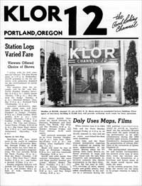
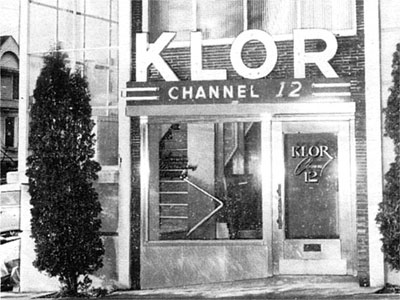
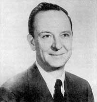

|
KLOR's
Premiere
Broadcast
There
was
much
anticipation
prior
to
KLOR's
sign-on
on
March
8,
1955.
A
third
TV
station
in
Portland
meant
that
local
viewers
would
have
a
full
slate
of
programs
from
the
three
major
networks
of
the
time.
(DuMont,
an
early
pioneer,
had
encountered
significant
financial
difficulties,
and
the
network
was
slowly
shutting
down.)
In
preparation
for
the
premiere
broadcast,
KLOR
printed
an
eight
page
booklet,
introducing
viewers
to
Channel
12's
programs,
staff,
owners
and
network.
Reprinted
below,
are
some
of
the
articles
in
that
publication.
|
|
 |
|
Studios
of
KLOR,
channel
12,
are
at
915
NE
Davis
street
in
remodeled
factory
building.
Floor
space
of
two-story
building
is
22,500
feet,
will
provide
sufficient
work
room
for
busy
operation. |
Station
Logs
Varied
Fare
Viewers
Offered
Choice
of
Shows
Starting
with
its
first
commercial
telecast,
The
Ron
Myron
Show,
at
3:30pm
Wednesday,
KLOR
promises
to
fill
the
airwaves
with
programs
designed
for
the
entertainment
of
family
audiences
For
mystery
fans,
for
example,
will
be
Mr.
and
Mrs.
North
(Sunday,
Monday,
Saturday
at
6:30pm);
Ellery
Queen
(Sunday,
7:30pm);
Man
Behind
the
Badge
(Sunday
8pm);
Sherlock
Holmes
(Sunday,
9:30pm);
and
Scotland
Yard
(Wednesday,
10pm).
Armchair
adventurers,
especially
young
ones,
will
have
these
telecasts
to
choose
from:
Passport
to
Danger
(Tuesday,
8:30pm);
Flash
Gordon
(Wednesday,
6:30pm);
Lone
Ranger
(Thursday,
7:30pm);
Cowboy
G-Men
(Friday,
6:30pm);
The
Vise
and
International
Police
(Friday,
9:30-10:30pm);
Big
Game
Hunt
(Saturday,
5:30pm),
and
Dangerous
Assignment
(Saturday,
9:30pm)
Sports
to
Get
Play
Sportfans
will
have
latest
news
in
the
world
of
athletics
from
Charlie
LaFranchise
Monday
through
Friday
at
10:40.
Quiz
shows
too,
have
been
included
in
the
station's
programming.
The
fare
includes
Break
the
Bank
(Sunday,
10pm);
Stop
the
Music
(Tuesday,
7:30pm);
Who
Said
That?
(Wednesday,
9:30pm),
and
Dollar
a
Second
(Friday,
9pm).
Sunday
religious
features
will
include
All
Church
Religion
at
3pm,
and
Father
Mac's
Album
at
4:30,
followed
by
Organotes.
News
shows
include
these
across
the
board
telecasts
by
Sherman
Washburn
and
Doni
Hurd;
The
World,
The
West
and
The
Weather,
6:30pm,
Monday
through
Friday,
and
Final
Edition,
10:30
weeknights.
ABC
network
newscasts
will
be
by
Drew
Pearson
(Sunday,
9:15pm);
John
Daly
(Monday-Friday,
4:15pm),
and
weekly
news
highlights
(Sunday,
9pm).
Music
will
come
by
way
of
Voice
of
Firestone
(Monday,
8:30pm),
and
Guy
Lombardo
(Thursday,
8:30pm).
KLOR
will
offer
major
film
features
throughout
the
week
and
these
general
interest
programs:
Barney
Keep's
The
Show
(Tuesday,
8pm);
Crusade
in
Europe
(Sunday,
4pm);
Stu
Erwin
(Wednesday,
8:30pm),
and
Ray
Bolger
(Friday,
8:30pm).
|
| Daly
Uses
Maps,
Films
When
viewers
tune
in
to
John
Daly
and
the
News
Monday
through
Friday
at
4:15pm
on
KLOR,
channel
12,
they
will
see
no
static
man-behind-the-desk
news
broadcast.
|  |
|
ABC
News
Anchor
John
Daly |
John
Daly
and
the
News
stresses
interpretive
reporting
with
emphasis
on
making
the
news
understandable
to
the
viewer.
Moving
about
his
TV
setting,
Daly
easily
directs
audience
attention
to
maps
and
other
visual
aids.
He
uses
films
frequently
and
occasionally
interviews
someone
who
figures
prominently
in
the
day's
news.
Now
the
top
man
in
ABC-TV's
coverage
of
news,
special
events
and
public
affairs,
Daly
added
considerably
to
his
stature
as
a
newsman
during
the
1952
political
conventions,
where
he
served
as
"quarterback"
for
the
network's
40-man
news
staff.
He
again
turned
in
top
performance
as
an
ABC
commentator
during
the
1952
election
night
returns,
President
Eisenhower's
inauguration
and
the
presentation
of
official
BBC
films
of
the
coronation
of
Queen
Elizabeth
II.
The
distinguished
commentator
and
foreign
correspondent
has
covered
every
type
of
news
story
from
the
German
war
trials
to
the
devastation
of
a
hurricane
and
knows
many
of
the
major
world
figures
who
make
the
news.
In
his
evening
program,
Daly
helps
the
viewer
see
the
news
in
its
proper
relation
to
today's
world.
|
Variety
of
Movies
Planned
for
Channel
12
Viewers
No one will deny that the
oft-reproduced movie version of Somerset Maugham's short story "Rain" always has been a
Valhalla for competent stars who want to lay on drama like a fudge icing.
But television "late show" viewers, who don't know the production problems, are inclined to complain: "Joan Crawford and Walter Huston are wonderful, but give us Rita Hayworth and Jose Ferrer, just for a change in diet."
Why the old shows, many of them grade B or so?
Bob Saunders, KLOR's film director, can name three very convincing reasons, although part of his job will be scrupulously to search for the best available packages for ten film theaters the station has logged.
Economic Problem Arises
Television film directors face the same problem that magazine distributors sometimes hang up on. To secure a contract for one feature they want, they often have to accept less desirable films from the eastern distributors.
The stumbling block is an economic one. Aside from station production costs, the expense of film ranges from about $500 to $2000 a week, Saunders said. This precludes scheduling only movies of "Executive Suite" quality for the ten weekly film spots.
Most television film theaters are financed at least partly by participating advertisers. They are fertile ground, in other words, for spot ads. Seldom does a single advertiser pay for the entire time taken up by a film theater.
KLOR, channel 12, will feature four regular movie programs headed by
Home Town
Theater, presently scheduled Monday through Saturday nights.
Foreign Films Planned
More elaborate movie snacks, however will be concocted for KLOR's late movie audience in three other scheduled film casts. One of them,
Imperial
Theater, will be composed of foreign films.
Academy
Theater will be the most expensive package in the business. It will show only
first-run pictures.
Spotlight
Theater also will be in the quality class, Saunders said.
But to supply films for these spots will depend partially on
availability, the third of a film director's problems. Saunders will work with various distributors and use up considerable air mail stamps dickering for films. When films have been booked, he can count on having the features for a contract life of from 13 weeks to three or four years.
Syndicated Shows Edited
In addition to feature movies, he will be booking, editing and producing syndicated
pieces
--
continued dramas built around a principal set of characters, like "The Falcon" and his retinue. These films are used by various stations throughout the country, and will not come to
KLOR
in
any
set order.
That situation poses another problem, a technical one, that film directors must avoid to prevent fouling up a telecast. In the case of syndicated film, it means Saunders must be sure well in advance just which installment of a show is to be presented, so that station and media publicity will coincide.
|
This
page
last
updated
on
August 16, 2025 |
|
Yesterday's KPTV Website design and content ©2003-2025 by Ron Dunevant, LLC unless otherwise noted.
This website is not affiliated with or operated by KPTV or its parent company, Gray Television.
Please direct any inquiries to: yesterdayskptv@gmail.com. |
| |